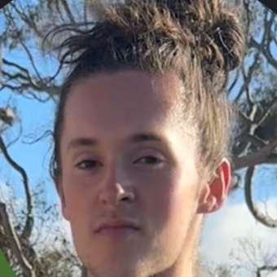

Sustainable food systems
Promote sustainable and innovative food production systems through vertical farming.
Registered Student Organization · UC San Diego
The Vertical Farming Student Organization (VFSO) is an interdisciplinary, student-led group dedicated to the research, design, construction, and operation of a vertical farming system at UC San Diego.
Meetings: Tuesdays, 5–6 PM
Climate Action Lab, Ridge Walk Academic Complex (Sixth College)
About VFSO
Vertical farming grows crops in stacked layers, often indoors under controlled lighting, so food can be produced in small footprints close to where people live. VFSO brings students together to take that idea from research all the way to a working system on the UC San Diego campus.
We are a non-profit, registered student organization in the Service & Changemaking category with UCSD's Center for Student Involvement. Whether you study engineering, biology, business, or the social sciences, there's a place for you here.
Our mission
Promote sustainable and innovative food production systems through vertical farming.
Provide hands-on, experiential learning opportunities to students of all majors.
Foster collaboration between STEM, robotics, engineering, environmental science, business, and social science disciplines.
Directly benefit the UCSD community through education, research, food access, and sustainable initiatives.
Bridge academia and industry by engaging established vertical farming companies and start-ups.
Find your fit
Membership is open to all currently enrolled UC San Diego students, regardless of major, year, background, or experience.
Get involved
Hop into our Discord server to meet members, and follow @vfsoatucsd on Instagram for updates. You can also email vfsoatucsd@gmail.com.
Tuesdays, 5–6 PM at the Climate Action Lab in UCSD's Ridge Walk Academic Complex, Sixth College.
Attend at least two club meetings or events and you're in. Membership is free. Excusals are reviewed case by case.
Leadership
President & Founder

Community mentor · 2025–2026
Seventh College, Synthesis Program
Our commitments
FAQ
No. Membership is open to all currently enrolled UC San Diego students regardless of major, year, background, or experience.
Nothing. Membership is free.
Tuesdays from 5–6 PM at the Climate Action Lab in the Ridge Walk Academic Complex, Sixth College. To become a member, attend at least two club meetings or events.
Active members will vote on preferred fundraising approaches, such as selling grown produce, CSI funding applications, or seeking sponsors.
VFSO is a registered student organization at UC San Diego. Like all registered student organizations, it is an independent entity and not an official unit of the University.
Ready to dig in?
Join our Discord to connect with members, follow us on Instagram for updates, or email the principal members directly.